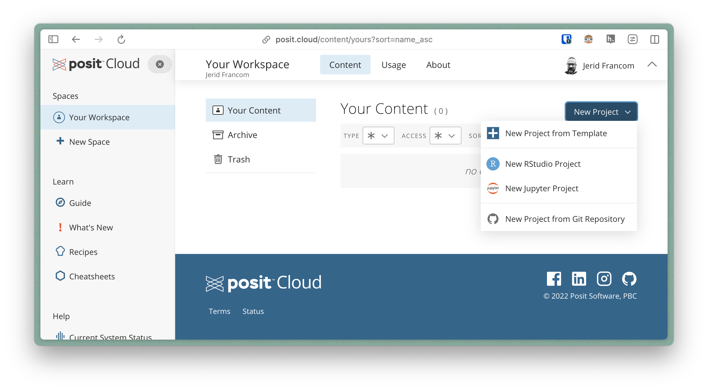
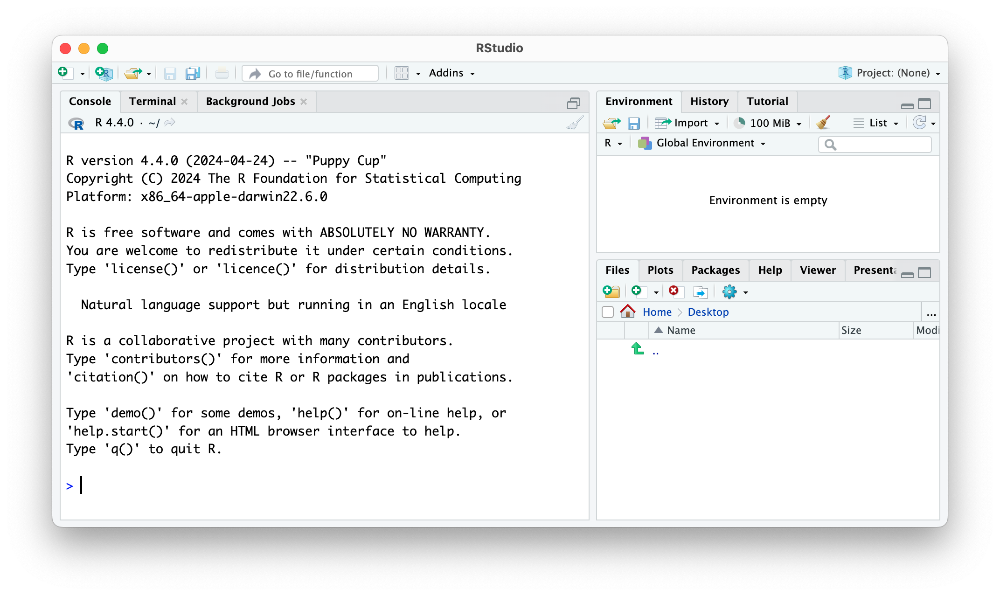
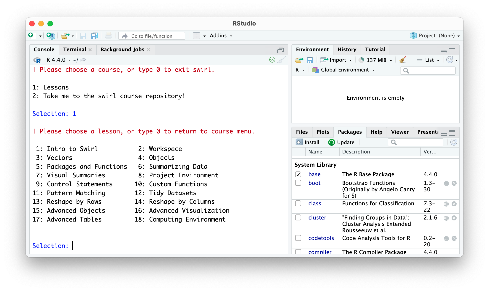
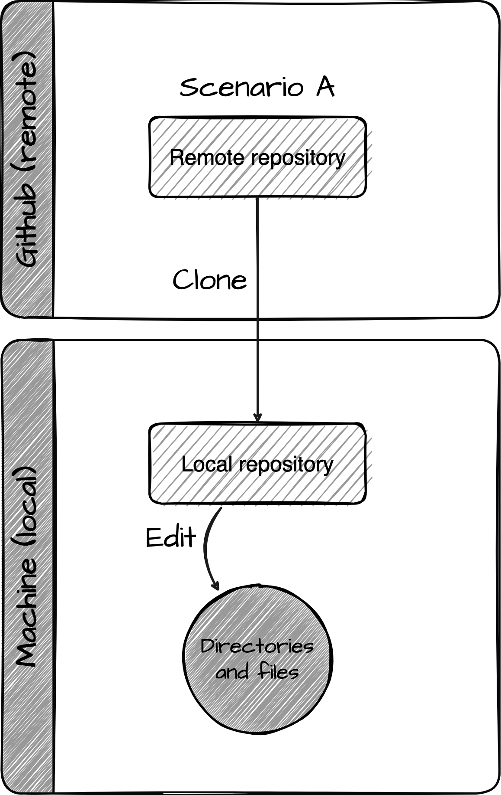

Resources Kit
Guides
Recipes
Instructors
Guides

01. Setting up an R environment
In this guide, we will explore options for setting up an R environment. We will discuss local, remote, and virtual environments. Each have their own advantages and shortcomings. The best option for you will depend on your needs and preferences.

02. Installing and managing R packages
In this guide, we will cover how to install and manage R packages. We will discuss two primary methods for installing packages: using the RStudio IDE interface and using the R console. We will also cover how to attach and detach packages in an R session, and how to manage packages by listing, updating, and removing them.

03. Working with the interactive R programming lessons
In this guide, we provide an overview of the interactive R programming lessons, explain how to access the lessons, use the lessons, and remove the lessons.

04. Setting up Git and GitHub
In this guide, we will cover the basics of setting up Git and GitHub. We will also cover the basics of using Git and GitHub to manage a project. This guide is intended for beginners who are new to Git and GitHub. It is also intended for those who are new to using Git and GitHub with R.
05. Creating reproducible examples
Helping you help yourself
In this guide, we will explore how to create reproducible examples using {reprex}. Reproducible examples are essential for effective communication and collaboration among data scientists and statisticians.
06. Identifying data and data sources
In this guide, we will explore how to create reproducible examples using the {reprex}. Reproducible examples are essential for effective communication and collaboration among data scientists and statisticians.
No matching items